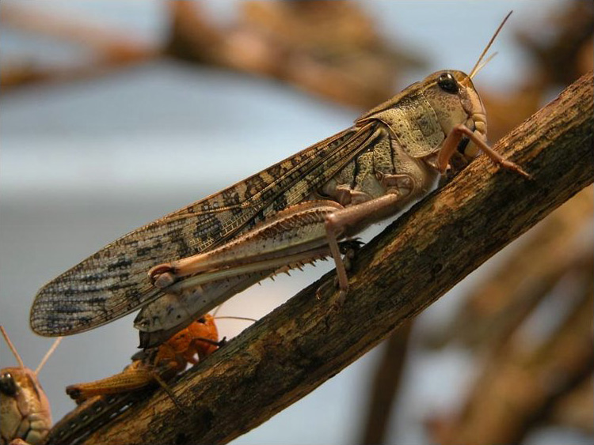

|
Holometabola
Les Holométaboles, ou Holometabola, sont un super-ordre d'insectes parfois dénommés Endoptérygotes, ou Endopterygota, qui constituent une catégorie d'insectes, sous-classe des Ptérygotes, qui se caractérise par leur développement, appelé parfois improprement « holométabolisme ». |
Paraneoptera
Les paranéoptères (Paraneoptera), anciens hémiptéroïdes, sont une catégorie d'insectes, dans la sous-classe des ptérygotes, section des néoptères. |
Polyneoptera

Les polynéoptères (Polyneoptera) forment un super-ordre d'insectes, sous-classe des ptérygotes, section des néoptères. |